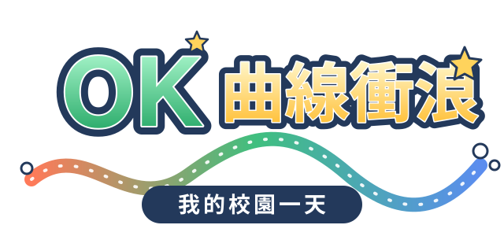

本作品的程式、故事文字、美術與音效主要由 AI 生成，再經作者試玩、回報問題與修改後完成。以下依實際對話紀錄整理。
| 工具名稱 | Claude（Anthropic），claude.ai 網頁版 |
|---|---|
| 模型 | Claude Opus 5.5 |
| 使用功能 | 程式撰寫與執行、自動化瀏覽器測試（Playwright）、網頁發佈 |
| AI 負責的工作 | 遊戲程式（HTML、CSS、JavaScript）、三個故事文字、SVG 與 Canvas 美術、Web Audio 音效、README、教師說明頁、本頁、自動測試 |
| 使用期間 | 2026/11/13 22:06 至 2026/11/14，同一個對話中完成 |
| 成品位置 | GitHub 儲存庫 prkunnn/sel（GitHub Pages 部署） |
共 9 次關鍵互動：1 次完整開發，後續 8 次由作者試玩後提出。提示全文見最下方。
| # | 時間 | 作者的提示 | AI 生成結果 | 採用情形 |
|---|---|---|---|---|
| 1 | 11/13 22:06 | 上傳完整任務提示詞：開發完整 SEL 衝浪遊戲（3 個故事、各 6 事件、4 種調節小遊戲、結果曲線） | 完整專案 19 個檔案：遊戲程式、故事資料、10 個 SVG 素材、README；並以自動測試玩完 3 個故事（桌機與手機） | 採用，為本作品主體 |
| 2 | 11/13 23:19 | 「我如果不想要這麼多表情符號可以從哪個檔案改」 | 列出各表情符號所在檔案與修改方法 | 作者自行刪除部分按鈕上的表情符號 |
| 3 | 11/13 23:30 | 回報「成果卡產生失敗」 | 分析原因，改用 Canvas 繪製徽章 | 採用 |
| 4 | 11/13 23:42 | 「我想多加一點星星」 | 衝浪光點星星數量約加倍 | 採用 |
| 5 | 11/13 23:45 | 詢問想法拼圖畫面的表情符號位置 | 指出三處位置與修改方式 | 作者自行判斷是否修改 |
| 6 | 11/13 23:46 | 再次回報成果卡失敗 | 重現問題：本機直接開啟時舊版會失敗；說明替換檔案 | 作者替換檔案後確認可用 |
| 7 | 11/13 23:56 | 回報首頁 LOGO 文字變空心 | LOGO 文字轉為向量路徑 | 採用，作者確認已正常 |
| 8 | 11/14 00:04–00:08 | 「老師說要這個」（一頁教學說明）；再要求「做一頁式網頁說明」 | 教學說明文件；之後做成 teacher.html 與 3 張遊戲截圖 | 採用網頁版 |
| 9 | 11/14 00:15–00:41 | 詢問 GitHub 上要改哪些檔案、回報看不到說明按鈕；要求 AI 歷程與材料包 | 整理修改清單；核對儲存庫確認檔案正確；製作本頁 | 作者自行上傳與確認 |
問題來自兩種管道：AI 自動測試，以及作者在自己的瀏覽器試玩。後者找到了 AI 測試環境沒有發現的問題。
| 問題 | 發現者 | 原因 | 修改 |
|---|---|---|---|
| 成果卡產生失敗 | 作者試玩 | 徽章圖檔畫進 Canvas 後，瀏覽器以安全性為由禁止匯出圖片 | 改用 Canvas 直接繪製徽章 |
| LOGO 文字顯示為空心 | 作者試玩 | SVG 文字使用漸層與特殊描邊，各瀏覽器支援不一 | 文字轉為向量路徑 |
| 光點星星太少 | 作者試玩 | 遊戲體驗偏好 | 生成間隔 1.15 秒改為 0.6 秒 |
| 表情符號過多 | 作者試玩 | 介面偏好 | 作者自行刪除按鈕上的表情符號 |
| 高激發時三個情緒區被海水蓋住 | AI 測試 | 區域標籤畫在海水下方 | 海水依三區上色，標籤移到上層 |
| 手機上暫停按鈕被擠出畫面 | AI 測試 | 上方資訊列寬度超過手機螢幕 | 小螢幕隱藏時鐘、縮小按鈕 |
| 成果卡文字重複、標點在行首 | AI 測試 | 文字換行程式錯誤 | 重寫換行邏輯 |
| 波浪轉折時衝浪板傾斜過度 | AI 測試 | 坡度未限制 | 傾斜角度設上限 |
沒有使用任何外部圖片、音檔或程式庫；唯一的外部素材是開源字型。
| 素材 | 檔案 | 來源 | 授權 |
|---|---|---|---|
| 角色、表情、情緒精靈、事件場景、衝浪道具 | js/art.js | AI 以 Canvas 程式繪製 | 原創 |
| LOGO、故事卡、技能圖示、徽章、指南針 | assets/svg/ | AI 手寫 SVG | 原創 |
| 背景音樂與音效 | js/audio.js | AI 以 Web Audio API 即時合成 | 原創 |
| 教師說明頁截圖 | assets/img/ | 自動測試時擷取的本遊戲畫面 | 原創 |
| 介面字型 | （線上載入） | Noto Sans TC，Google Fonts | SIL Open Font License |
| LOGO 文字外型 | assets/svg/logo.svg | Noto Sans CJK TC Black（轉為向量路徑） | SIL Open Font License |
| 自動測試工具 | tests/playthrough.mjs | Playwright（僅開發測試用） | Apache 2.0 |
故事情境、三區概念（高激發、復原力、低激發）與四種調節技能的設定來自作者的任務提示詞；各事件的對話與選項文字由 AI 撰寫。
待作者補充：OK 曲線（復原力區）概念若參考特定教材、課程或文獻，請列在這裡。
# 任務：直接開發完整的 SEL 網頁遊戲《OK 曲線衝浪：我的校園一天》 你是一個專業的獨立遊戲開發團隊，同時具備以下專長： - HTML5 遊戲程式開發 - 2D 遊戲動畫與物理效果 - 兒童遊戲 UI/UX 設計 - Q 版卡通遊戲美術設計 - 社會情緒學習（SEL）課程設計 - 互動敘事與遊戲化學習 - 遊戲測試與錯誤修正 ## 最重要的要求 **我要的是一款真正可以玩的完整遊戲，不是企劃書、文字冒險、簡報或只有選擇題的網頁。** 請直接開發完整作品，不需要先詢問我、不需要分階段等待確認。 如果你具備檔案編輯與程式執行能力，請直接建立所有專案檔案並完成測試。 如果是在 Claude Artifacts 環境，請優先產生可立即預覽的互動版本，並在環境允許的範圍內提供完整原始碼。 --- # 一、遊戲基本設定 遊戲名稱：《OK 曲線衝浪：我的校園一天》 遊戲副標題：乘著情緒的波浪，找到自己的復原力！ 遊戲類型：2D 橫向衝浪＋校園互動故事＋情緒調節小遊戲。 目標玩家：國小四至六年級學生。 遊玩時間：每次選擇一個故事，完整遊玩 5–10 分鐘，理想時間為 7–8 分鐘。 平台：電腦、平板、手機瀏覽器。 技術：HTML5、CSS3、JavaScript、Canvas 或 Phaser 3。 盡量採用無需安裝、無需登入、無需 API Key 的純前端架構，能部署到 GitHub Pages 或 Netlify。 介面、故事、按鈕、教學、回饋全部使用臺灣繁體中文。 --- # 二、遊戲核心玩法 玩家不是在海上完成一般的跳躍跑酷，而是在一條代表情緒激發程度的 OK 曲線上衝浪。 故事中的事件會讓波浪上升或下降。 畫面分為三個區域： 1. 高激發區：紅橘色，可能代表興奮、焦慮、生氣、緊張。 2. 復原力區（OK Zone）：綠色，代表仍具有思考、學習、互動及應對能力。 3. 低激發區：藍色，可能代表失落、無力、退縮或麻木。 請注意： - 高激發不等於壞情緒。 - 低激發不等於失敗。 - 復原力不是一直保持開心。 - 玩家不需要永遠停留在綠色區。 - 不同學生面對同一件事情，可能有不同的感受。 - 情緒數值只用於遊戲模擬，不能宣稱測量玩家真實的心理狀態。 ## 衝浪操作方式 採用混合式衝浪。 一般故事階段： - 角色站在衝浪板上自動向前。 - 背景持續捲動。 - 波浪流暢起伏。 - 角色隨波浪上下移動。 - 衝浪板會依波浪坡度傾斜。 - 波浪變化必須有動畫過渡。 遇到事件時： - 衝浪速度逐漸降低。 - 顯示故事角色與事件。 - 玩家選擇當下的情緒。 - 玩家辨識身體訊號。 - 情緒曲線依玩家的選擇產生變化。 - 必要時啟動調節技能小遊戲。 - 完成後重新開始衝浪。 請加入真正的遊戲操作，例如讓玩家控制衝浪板平衡、跟隨波浪節奏或在安全港完成調節挑戰。 操作不能過難，不能因操作失敗而懲罰玩家的情緒。 --- # 三、遊戲首頁 首頁必須像正式的兒童教育遊戲。 畫面包含： - 大型遊戲 LOGO - Q 版學生衝浪角色 - 動態彩色情緒波浪 - 漂浮雲朵、陽光、浪花 - 開始遊戲按鈕 - 遊戲說明按鈕 - 音效開關 - 降低動畫效果選項 視覺風格： 精緻 Q 版卡通、柔和明亮色彩、圓潤造型、流暢動畫、具有遊戲感的介面。 不要做成一般網站儀表板，也不要只有文字、色塊和簡單按鈕。 --- # 四、故事選擇畫面 提供三張大型故事卡片。 每張卡片有獨立的插圖、標題與簡介。 ### 故事一：運動會的一天 主題：挫折、期待、團隊合作與復原力。 ### 故事二：考試的一天 主題：壓力、焦慮、自我接納與調整策略。 ### 故事三：校外教學的一天 主題：人際互動、意外事件、情緒調節與尋求支持。 三個故事都必須完整可玩，不得只有第一個故事完成，另外兩個顯示開發中。 玩家每次只需要選擇一個故事，不需要連續玩完三個。 --- # 五、完整故事劇情 每個故事包含六個連續事件，形成起、承、轉、合的完整情緒旅程。 每個事件需要： - 場景插圖 - 角色對話 - 情緒辨識 - 情緒曲線變化 - 玩家選擇 - 合理的後續反應 ## 故事一：《運動會的一天》 事件 1：早上到校 今天是運動會，操場上掛滿旗幟，同學都非常興奮。 玩家選擇自己的心情：期待、緊張、平靜或其他感受。 事件 2：接力賽即將開始 老師宣布接力賽即將開始，玩家心跳加快。 玩家觀察身體訊號，選擇是否先調整狀態。 事件 3：接力賽正式開始 玩家進入短時間衝浪操作，跟隨波浪節奏保持平衡。 比賽進行時，同學的加油聲讓情緒產生變化。 事件 4：接棒失誤 玩家不小心掉棒，隊伍因此落後。 此時可能感到難過、生氣、委屈或自責。 玩家需要辨識自己的狀態，並嘗試調節策略。 事件 5：同學的不同反應 有同學失望，也有同學鼓勵。 玩家選擇如何表達感受、面對同學及處理問題。 事件 6：運動會結束 全班合照，玩家回顧一天。 結局依照玩家的選擇呈現不同對話，但不以比賽名次作為成功與否的標準。 ## 故事二：《考試的一天》 事件 1：早上準備考試 玩家帶著準備好的文具到校，可能有信心，也可能擔心。 事件 2：同學討論考試範圍 同學突然提到一個自己不熟悉的題型，玩家開始緊張。 事件 3：考試開始 玩家進入短時間衝浪挑戰，模擬注意力與壓力起伏。 事件 4：遇到不會的難題 玩家可能感到慌張、困惑、挫折。 選擇呼吸、暫停、先做會的題目等策略。 事件 5：考試結束 同學開始對答案，玩家可能因為答案不同而擔心。 玩家選擇如何回應比較壓力。 事件 6：放學回顧 玩家思考自己今天面對壓力的方法，並選擇下一次考試想嘗試的策略。 ## 故事三：《校外教學的一天》 事件 1：搭車出發 玩家非常期待校外教學，也可能因為離開熟悉的環境而緊張。 事件 2：抵達參觀地點 大家開始探索，玩家感到好奇與興奮。 事件 3：小組意見不合 同學對參觀路線有不同意見，玩家可能感到生氣、委屈或困惑。 事件 4：與隊伍暫時走散 玩家發現自己沒有跟上隊伍，開始擔心。 請設計安全的處理方式，例如留在安全地點、尋找現場工作人員或聯絡帶隊老師，不鼓勵自行亂跑。 事件 5：重新與隊伍會合 玩家可能感到安心，也可能還有委屈或緊張。 需要練習表達自己的感受與需求。 事件 6：返校回顧 玩家回想今天的快樂、衝突、擔心與成長。 --- # 六、四種調節技能小遊戲 必須設計成實際可操作的小遊戲，不可以只是按鈕扣數值。 ### 技能一：呼吸光圈 畫面出現會擴張、收縮的光圈。 玩家跟隨節奏完成三次呼吸。 提供較慢、較舒適的節奏與跳過選項。 ### 技能二：安全港停靠 玩家控制衝浪板，逐漸減速並停靠安全港。 接著觀察身體訊號，選擇自己需要的短暫休息方式。 ### 技能三：支持浮島 畫面出現老師、朋友、家人等支持人物。 玩家選擇適合求助的對象，並組合一句清楚、尊重的求助說法。 ### 技能四：想法拼圖 畫面出現一個可能過度概括的想法。 例如：「我失誤了，所以大家一定討厭我。」 玩家將想法拼圖組合成較平衡的說法。 例如：「我今天失誤了，但不代表大家都討厭我。我可以先了解同學的想法。」 不能要求玩家否認自己的感受或強迫正向思考。 --- # 七、情緒波浪系統 請設計真正可視覺化的情緒曲線。 每次事件記錄： - 故事名稱 - 事件編號 - 玩家選擇的情緒 - 玩家辨識的身體訊號 - 模擬激發程度 - 使用的調節技能 - 玩家自評策略是否有幫助 - 最後的行動選擇 波浪應隨事件持續變化，而不是固定的正弦波。 不同選擇要形成不同的曲線。 同一故事重新遊玩，也可能產生不同的結果。 情緒與激發程度應分開處理，例如興奮與焦慮都可能是高激發，但感受不同。 --- # 八、遊戲結局與學習成果 完成故事後，生成「我的 OK 曲線」。 結果畫面包含： 1. 今日故事名稱。 2. 完整情緒波浪曲線。 3. 六個事件節點。 4. 每個事件的情緒紀錄。 5. 玩家使用過的調節技能。 6. 個人復原力工具卡。 7. 一句鼓勵性的學習回饋。 8. 重新遊玩按鈕。 9. 返回故事選單按鈕。 可以加入下載 PNG 學習成果卡的功能。 不應以情緒高低、是否變開心或是否待在綠色區作為競爭分數。 --- # 九、遊戲美術設計 請直接製作遊戲所需的視覺素材。 整體採用統一的 2D Q 版卡通風格。 需要的素材： 角色： - 男女主角 - 老師 - 同學 - 情緒精靈 - 角色開心、緊張、生氣、難過、安心等表情 - 衝浪姿勢與簡單動畫 場景： - 遊戲首頁 - 運動會操場 - 接力跑道 - 考試教室 - 校外教學巴士 - 博物館或戶外參觀地點 - 情緒海洋 - 安全港 - 支持浮島 道具： - 衝浪板 - 情緒波浪 - 浪花 - 呼吸光圈 - 情緒指南針 - 調節技能圖示 - 復原力徽章 UI： - 首頁 LOGO - 故事選擇卡 - 角色對話框 - 情緒選擇按鈕 - 三色情緒區域 - 調節技能面板 - 個人 OK 曲線 - 結局成果卡 如果環境支援圖片生成工具，可以使用它產生原創素材。 如果無法直接生成圖片，請使用高品質 SVG、Canvas 繪圖或 CSS 動畫製作可用的替代美術，不要因此停止開發。 禁止使用未經授權的網路圖片。 請確保所有素材都有清楚的檔名，且可以在未來替換。 --- # 十、音效與動畫 加入適度的背景音樂與音效： - 首頁輕快音樂 - 波浪移動音效 - 選擇按鈕音效 - 情緒轉折提示音 - 調節技能完成音效 - 結局溫暖音效 若無授權音檔，使用 Web Audio API 產生簡單原創音效。 必須有音效開關。 動畫要流暢，但不能過度刺激。 提供降低動畫效果選項。 --- # 十一、程式與品質要求 1. 三個故事都能從開始玩到結束。 2. 每個故事都有六個完整事件。 3. 故事內容不是只有單一事件，而是一整天的起承轉合。 4. 玩家每次只需玩一個故事。 5. 每個故事完整遊玩時間以 5–10 分鐘為目標。 6. 波浪動畫必須流暢。 7. 角色必須跟隨波浪移動。 8. 四種調節小遊戲都能操作。 9. 情緒選擇會影響後續波浪與回饋。 10. 三個故事要有不同的情境與劇情。 11. 支援電腦滑鼠、鍵盤及平板觸控。 12. 畫面不能出現文字溢出或按鈕無法點擊。 13. 不得有未完成的假按鈕。 14. 不得只有靜態畫面。 15. 不得把所有故事寫成單純的選擇題。 16. 遊戲不要求帳號或輸入真實個人資料。 17. 所有文字使用繁體中文。 18. 程式碼完整、可編輯、可部署。 19. 不依賴需要付費的服務。 20. 請盡可能自行執行測試並修正問題；無法測試的項目需明確列出，不得宣稱已通過。 --- # 十二、請直接完成遊戲 請不要只回覆我「開發計畫」或「建議架構」。 請實際撰寫程式碼，建立完整的遊戲。 若你可以操作專案檔案，請直接建立： - index.html - style.css - JavaScript 遊戲程式 - 三個故事資料 - assets 美術資料夾 - README.md - 可直接部署的完整專案 如果你使用框架，請提供完整的設定檔與建置方式。 如果目前是 Claude Artifacts，請先建立完整可玩的互動作品，並盡量讓使用者可以取得原始碼。 請自行處理合理的設計細節，不需要每個階段都等待我確認。 **最終目標：完成一款具有真正衝浪操作、完整故事、情緒變化、調節技能與學習回饋的 SEL 競賽遊戲。** 現在請直接開始製作。